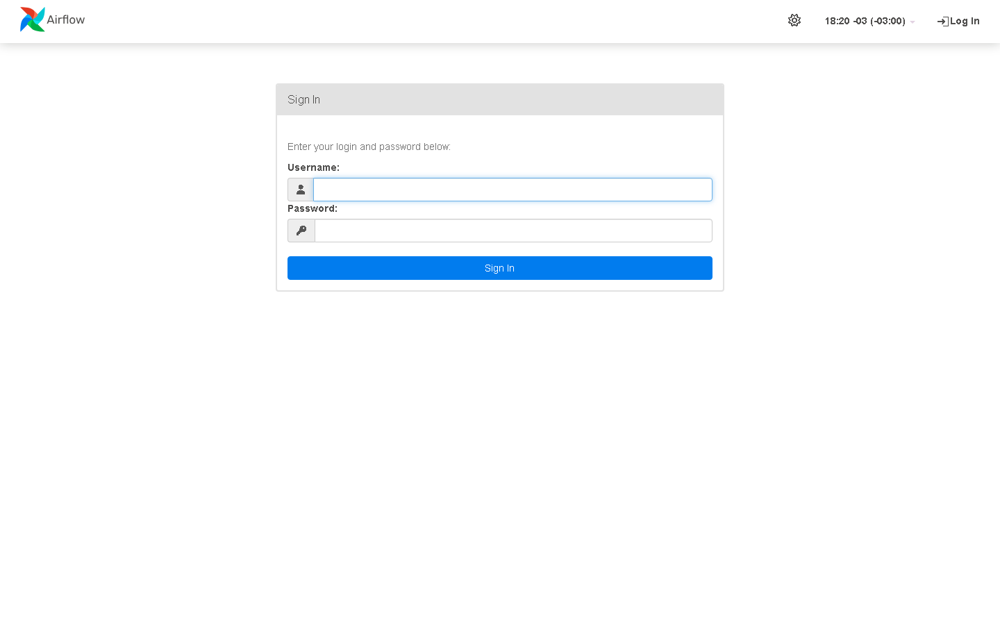
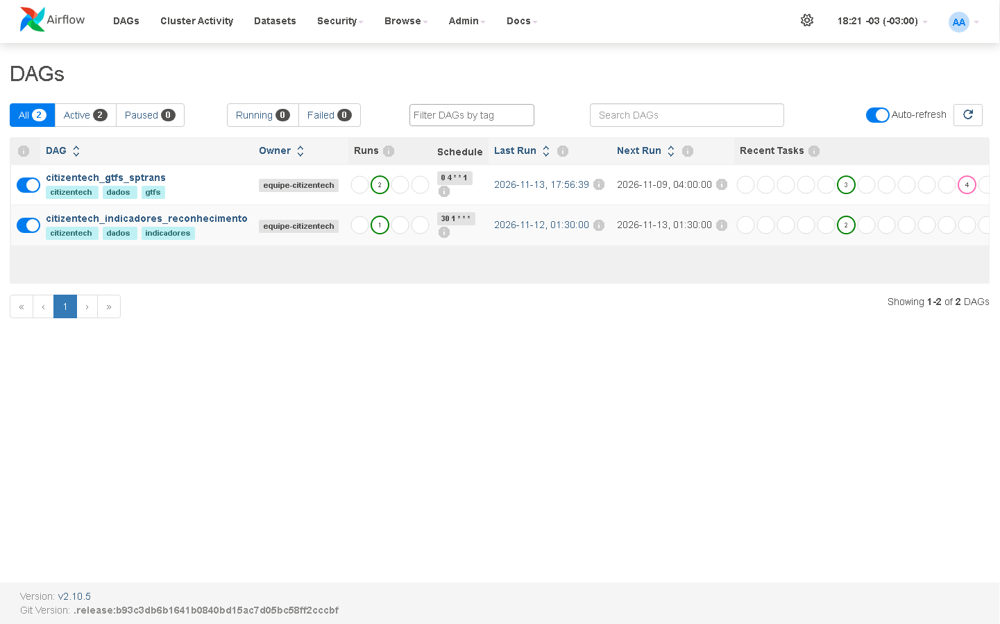
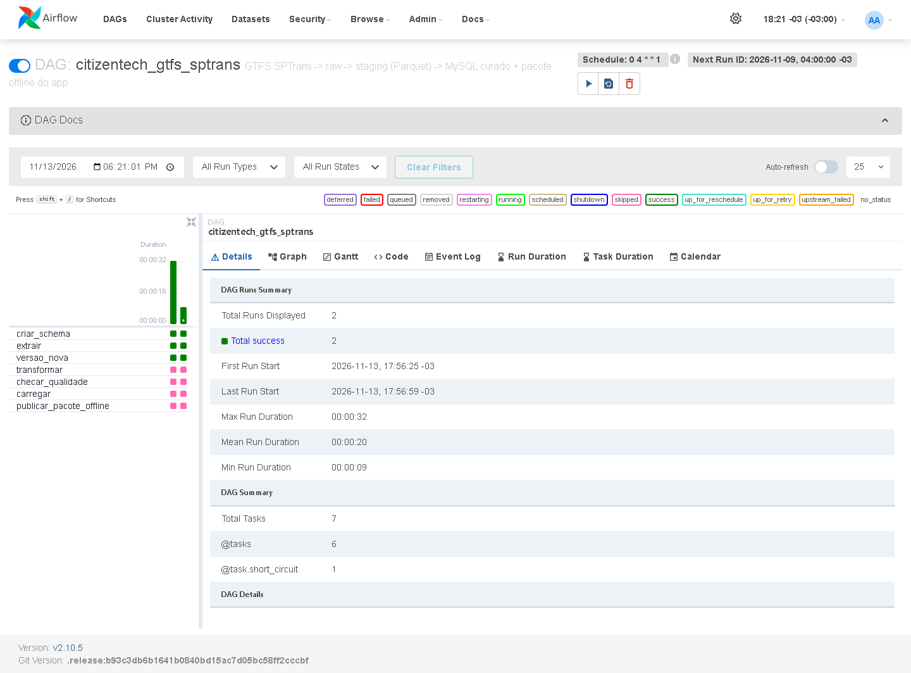
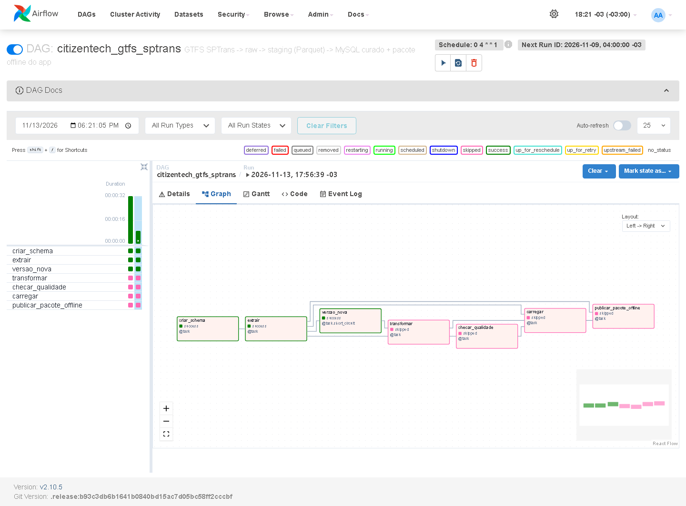
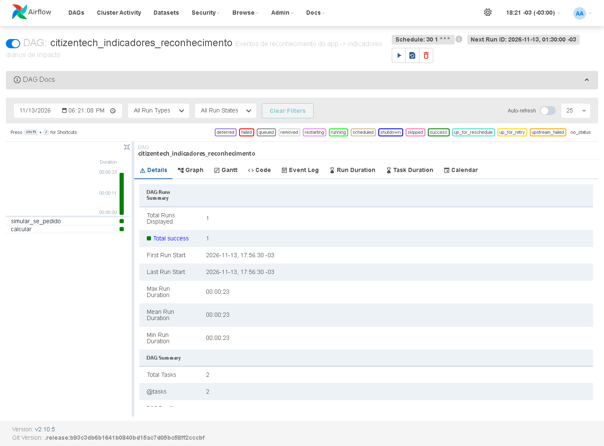
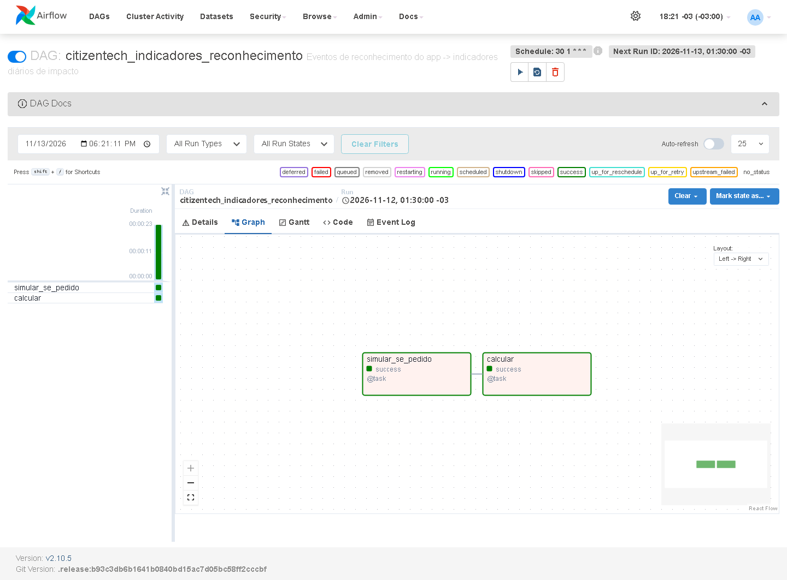
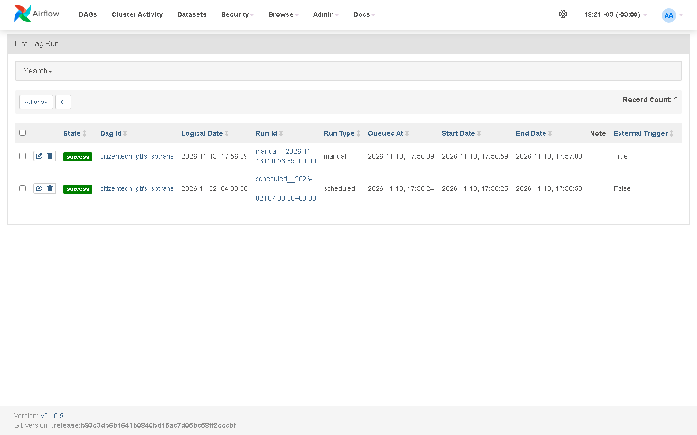
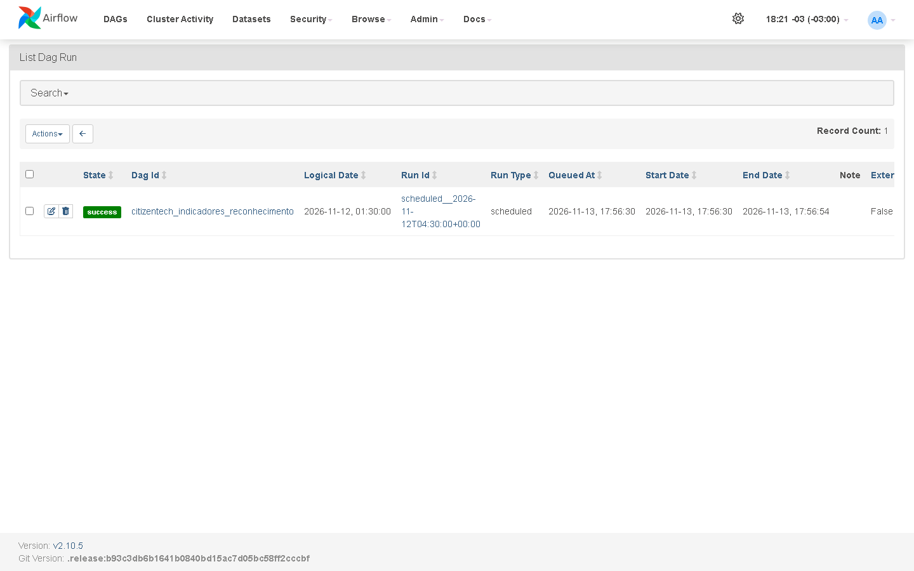

Este documento reúne prints da interface do Apache Airflow como evidência do funcionamento do pipeline de dados do projeto CitizenTech. Cada print vem com sua justificativa alinhada aos critérios de entrega.
📦 Link do repositório + PDF único
As evidências abaixo comprovam que o pipeline está funcional e o PDF de entrega contém o diagrama de arquitetura e o dicionário de dados necessários para a avaliação.
📅 Portal da disciplina até 19/11, 23h55
Todos os prints foram capturados e organizados para envio até o prazo limite. Um único envio por equipe é suficiente, contendo todos os artefatos.
🔢 14 pontos: Pipeline 8 + Arquitetura 6
Os prints validam o ponto de "Pipeline funcional" (8 pontos): DAGs executando, dados sendo carregados, qualidade passando. E a arquitetura/documentação pontua 6 pontos com diagrama e dicionário.
Prints do Airflow

Tela de login do Airflow (localhost:8080)
Justificativa: Comprova o acesso à interface de orquestração. O usuário admin (padrão da disciplina) logado confirma que o ambiente está configurado e pronto para receber os DAGs.

Página inicial do Airflow — Grid de DAGs
Justificativa: Visão geral dos dois DAGs ativos (citizentech_gtfs_sptrans e citizentech_indicadores_reconhecimento). Confirma que ambos estão carregados no Airflow 2.10.5 e prontos para execução.

DAG citizentech_gtfs_sptrans — Grid
Justificativa: Exibe o grid da DAG 1 e o estado de cada task. Na execução mostrada, criar_schema, extrair e versao_nova concluíram, enquanto transformar, checar_qualidade, carregar e publicar_pacote_offline foram ignoradas pelo short-circuit por já existir carga com o mesmo SHA-256. Valida o "Pipeline funcional" e a idempotência.

DAG citizentech_gtfs_sptrans — Graph
Justificativa: Visualização gráfica do fluxo da DAG 1 mostrando todas as tasks e suas dependências (criar_schema >> extrair >> versao_nova >> transformar >> checar_qualidade >> carregar >> publicar_pacote_offline). Na execução exibida, as etapas posteriores a versao_nova aparecem como "skipped" por short-circuit, demonstrando a idempotência da arquitetura orquestrada de ETL/ELT.

DAG citizentech_indicadores_reconhecimento — Grid
Justificativa: Grid da DAG 2 (indicadores de impacto). Mostra a task de simulação (com parâmetro `simular: true`) e o cálculo de indicadores. Valida o pipeline de geração de métricas de acerto/erro do reconhecimento de letreiros.

DAG citizentech_indicadores_reconhecimento — Graph
Justificativa: Fluxo gráfico da DAG 2 mostrando a simulação de eventos e o cálculo dos indicadores diários (taxa de acerto p50/p95, latência, acerto à noite). Comprova a transformação de eventos brutos em dados analíticos para o MVP.

Historico de DAG Runs — citizentech_gtfs_sptrans
Justificativa: Lista de execuções (dagrun) da DAG 1, ambas com estado "success". Na reexecução com o mesmo SHA-256, as tasks de transformação e carga ficaram "skipped" pelo short-circuit e o registro em carga_controle ficou como "ignorada" (sem duplicação de dados). Valida o critério de "carga não duplica".

Historico de DAG Runs — citizentech_indicadores_reconhecimento
Justificativa: Execuções da DAG 2 mostrando a geração de 500 eventos simulados e o cálculo dos indicadores para os últimos 7 dias. Demonstra que o pipeline funciona de forma repetível e diária, conforme o schedule configurado.